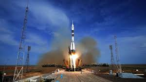
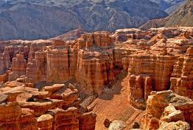

Baikonur Cosmodrome
Baikonur is the world's first and largest spaceport, from which the first artificial satellite and Yuri Gagarin were launched.
Charyn Canyon
Charyn Canyon is often called the "younger brother" of the Grand Canyon. It is a unique natural formation with breathtaking rock formations.
Medeu Ice Rink

Medeu is a famous high-altitude ice-skating rink near Almaty, known for its world records in speed skating.
Burabay National Park

Burabay is a picturesque natural park with forests, mountains, and crystal-clear lakes, making it a popular destination for tourism and recreation.
Mausoleum of Khoja Ahmed Yasawi

This historic monument, built in the 14th century in Turkestan, is a UNESCO World Heritage Site.